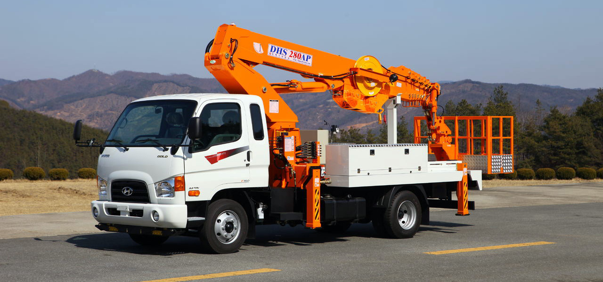

Кто такой гусек и зачем он автовышке?
Автовышка – необходимая техника во многих отраслях народного хозяйства, но купить ее и содержать под силу далеко не каждой компании. Это целесообразно лишь в том случае, если техника постоянно задействована и приносит прибыль.
В других случаях – это дополнительные расходы на содержание. Просто купить автовышку в Москве – недостаточно. Несмотря на то, что это многофункциональная техника, она не способна решить некоторые задачи, ввиду ограничений по грузоподъемности, длине стрелы и другим показателям. Широкий автомобильный парк нашей компании позволяет выбрать технику, которая справится с поставленной задачей.
Аренда автовышки от нашей компании позволяет проводить высотные работы любой сложности на профессиональном уровне по выгодным ценам. Наши сотрудники специально обучены, а техника находится в идеальном техническом состоянии, что всегда гарантирует результат. У нас имеется свидетельство о государственной регистрации Роскомнадзора, который подтверждает высокое качество услуг. Надежность и безопасность гарантирована полисом гражданской ответственности перед третьими лицами.
Наша компания давно в этом бизнесе, мы изучили потребности клиента и знаем, что вам предложить. Мы предлагаем не только широкий ассортимент автовышек, но и сервис высокого уровня. Большой опыт наших операторов гарантирует оперативность и безопасность работ. Наши менеджеры подберут технику для вас, исходя из поставленных задач и бюджета.
Мы также выполняем ремонт автовышек. Если в вашем парке есть такая сложная техника, доверяйте ее ремонт профессионалам. Таким образом вы получаете качество по умеренным ценам и можете быть уверенными, что отремонтированная техника будет служить вам надежно еще не один год.
Стоимость услуги автовышки зависит от количества отработанных часов и региона, в котором проводятся работы. Для постоянных клиентов предусмотрена система скидок.